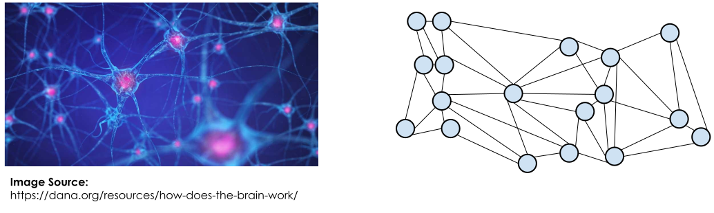
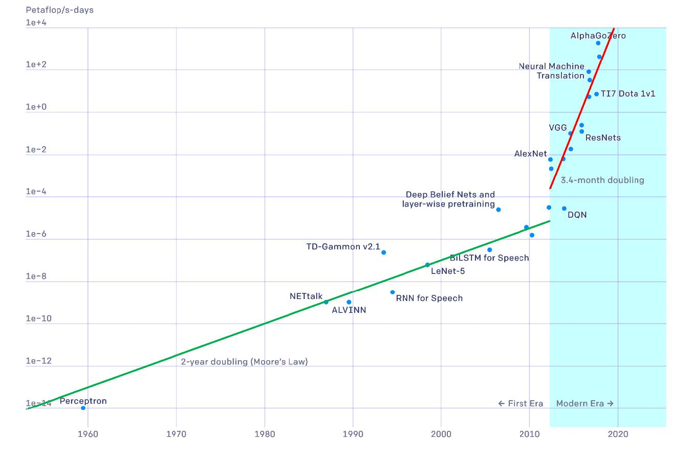
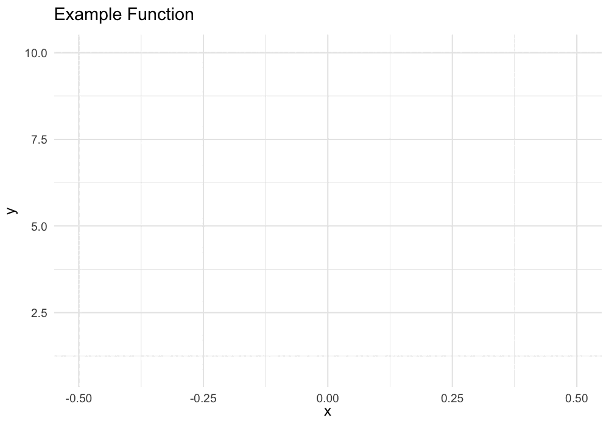

PSTAT 100: Lecture 20
An Introduction to Neural Networks
Department of Statistics and Applied Probability; UCSB
Summer Session A, 2025
\[ \newcommand\R{\mathbb{R}} \newcommand{\N}{\mathbb{N}} \newcommand{\E}{\mathbb{E}} \newcommand{\Prob}{\mathbb{P}} \newcommand{\F}{\mathcal{F}} \newcommand{\1}{1\!\!1} \newcommand{\comp}[1]{#1^{\complement}} \newcommand{\Var}{\mathrm{Var}} \newcommand{\SD}{\mathrm{SD}} \newcommand{\vect}[1]{\vec{\boldsymbol{#1}}} \newcommand{\tvect}[1]{\vec{\boldsymbol{#1}}^{\mathsf{T}}} \newcommand{\hvect}[1]{\widehat{\boldsymbol{#1}}} \newcommand{\mat}[1]{\mathbf{#1}} \newcommand{\tmat}[1]{\mathbf{#1}^{\mathsf{T}}} \newcommand{\Cov}{\mathrm{Cov}} \DeclareMathOperator*{\argmin}{\mathrm{arg} \ \min} \newcommand{\iid}{\stackrel{\mathrm{i.i.d.}}{\sim}} \]
Recap: Logistic Regression
Let’s, for the moment, go back to our last lecture before the ICA, when we talked about logistic regression.
Our idea was that a linear combination of our covariate functions could be mapped to a value in [0, 1] by way of a transformation; namely, the logistic function.
- This output is then interpreted as the probability of survival.
Diagramatically, we might represent this using the graph to the left.
This graph illustrates the “direct” relationship between the covariates and the output probability (albeit through the logistic function, not pictured on the graph).
Recap: Logistic Regression
- A perhaps more accurate representation of our logistic regression model might be
- However, for the sake of parsimony, we often remove the functional transformations from our graph:
A Quick Interlude about Graphs
By “graph,” we don’t mean the graph of a function but rather graph in the mathematical sense.
A graph is comprised of a collection of nodes (represented pictorially as circles) and edges (represented pictorially as lines connecting nodes).
- Graphs are particularly useful when representing relationships between objects; objects are represented as nodes, and a relationship between two objects can be represented as an edge connecting them, and arise frequently in network analysis.
Classification with Multiple Levels
We might imagine a situation in which, instead of having a binary output, we have a categorical output with more than two levels.
For example, back when we talked about PCA, we encountered the MNIST dataset in which each image belongs to one of 10 classes (each representing a digit).
We might update our diagram, then, to look something like that to the left.
For example, in the MNIST dataset, we would have (k = 10) output probabilities.
- πi then represents the probability that a given image is the digit i, for i in {0, …, 10}.
Series Estimators
\[ y(\vect{x}, \vect{\beta}) = \beta_0 + \sum_{j=1}^{p} \beta_j \phi_j(\vect{x})\]
- Now, each node represents a basis function
- Parameters (which we can really think of as weights) are, again, represented by edges
- If necessary, we can still pass the linear combination of our covariates through a function g() to create a more flexible model (these transformations aren’t depicted on our graph).
Generalizing
- Note that passing our linear combination of covariates through a function g() (which we can call an output activation function) leads to a potentially nonlinear model:
\[ y(\vect{x}, \vect{\beta}) = g\left( \beta_0 + \sum_{j=1}^{p} \beta_j \phi_j(\vect{x}) \right) = g \left( \tvect{\beta} \vect{\phi}(\vect{x}) \right) \]
- Recall that “linearity” in a model typically refers to the parameters - taking the output activation function (leading back to series estimation) results in a model that is linear in the parameters and hence one that is classified as “linear”.
- More complex output activation functions, however, may introduce nonlinearity into the model.
Neural Networks
These are all examples of artificial neural networks (often referred to simply as neural nets).
Broadly speaking, neural nets are mathematical models that are motivated by the functioning of the brain.
- Nodes correspond to neurons; edges correspond to neural pathways

Neural Networks
The general idea is to recursively construct a model, whereby outputs of one portion are used as inputs in another portion.
The examples of neural networks we’ve seen today so far are all examples of one-layer (sometimes called shallow) networks, in which we have just one input layer and one output layer, and no layers in between.
Neural Networks
- We can imagine potentially mapping inputs to another layer, and then mapping this (hidden) layer to the output layer:
One input layer
One hidden layer
One output layer
One parameter per edge
Each node “feeds” into another one layer down; hence the name feedforward neural network (NN).
- In general, the depth of a neural network is the number of non-input layers; hence, our NN above has depth 2.
Neural Networks
More Formally
We first take a linear combination of our inputs, and pass them through an activation function σX().
Each of these resulting quantities is then treated as an input into the hidden layer, which then takes a linear combination of these values, and passes them through yet another activation function σZ().
The resulting values are again weightedly-averaged, passed through a final output activation function σZ(), the result of which is then treated as the outputs of our NN.
Input Layer:
X = [x1, …, xp]
Hidden Layer:
Z = [σX(Xα1), …, σX(XαM)]
Output Layer:
𝔼[Y] = σZ(Zβ)
Neural Networks
Composition of Functions
- Note that, at the end of the day, a Neural Network really just models the output as a long composition of functions on the inputs:
\[ Y = f(X) =: (\sigma_Z \circ h_{\beta} \circ \sigma_X \circ h_\alpha)(X)\]
Each function in the composition is either known (like the activation functions) or linear (what I’ve called the h functions above).
So, two key things become apparent:
- A Neural Net is a statistical model
- “Training” a Neural Net amounts to estimating the weight parameters.
Neural Networks
Deep Neural Nets
- There is nothing stopping us from including more hidden layers.
- Generally, any NN with depth 3 or higher is considered a deep neural network
Neural Networks
Universal Approximation Theorem
There are a few different versions of the so-called Universal Approximation Theorem, posited and proved by different people at different points in time, differing in the assumptions made.
The broadest version of this theorem states: a feedforward neural network with one hidden layer and a finite number of neurons can approximate any continuous function on a compact subset of ℝn to an arbitrary degree of closeness.
- Subsequent versions have posited the same assertion for deep neural networks as well.
Crucially, though, the UAT does not tell us how to find such an approximation.
Neural Networks
Network Architecture
- To distinguish between portions of the model that need to be estimated and those that are assumed known/specified, we’ll often use the term architecture to refer to the portions of the NN that are prespecified. These include things like:
- The number of hidden layers
- The choice of activation functions
- The parameters are then just the weights by which we scale at each layer.
- Just like we did before, we can estimate these parameters by minimizing a loss function.
Neural Networks
Optimization
However, unlike with the simpler statistical models we considered (e.g. SLR), the minimization problems that arise in the context of training neural nets are often quite tricky and don’t always admit closed-form solutions.
As such, it is common to use iterative methods to solve the minimization problem.
One popular choice of such an algorithm is called gradient descent, which we’ll discuss in a bit.
Before we dive too deep into the general optimization, it may be useful to make concrete our goals in fitting a neural net.
Neural Networks
Concrete Problem
- As a simple example, consider a noiseless regression problem where the true signal function is sinusoidal:
- Our goal, for now, is to fit the true signal function using a Neural Net with one hidden layer comprised of three hidden nodes:
Neural Networks
Concrete Problem
That is: we begin with 50 input values x1 through x50.
What is it that we want out of our network?
- Well, ideally we want the “true” signal function f().
- But, NNs only return output values.
So, here’s the trick: we imagine finding the values of the signal function at a very fine grid of points. The finer the grid, the “smoother” our final function will look.
That is, the output of our NN should be a set of values {y1, …, yK} for some large value K, where yk denotes the value of the signal at some point xk.
- Note that xk may or may not be one of our original design points!
Neural Networks
Input Layer to Hidden Layer
We take a linear combination of our 50 input values: \[ a_j^{(1)} = \sum_{i=1}^{50} w_{ij}^{(1)} x_i + w_{j0}^{(1)} \] and scale each by an activation function: \[ z_j^{(1)} = \sigma_1 (a_j^{(1)}) \]
The \(z_j^{(1)}\) then form the input to our hidden layer, and receive a similar treatment as the original xi did.
Neural Networks
Hidden Layer to Output Layer
That is: \[ a_k^{(2)} = \sum_{j=1}^{3} w_{jk}^{(2)} z_{j}^{(1)} + w_{k0}^{(2)} \] for k = 1, …, K (we can, somewhat aribtrarily, take K to be 1000).
Finally, these \(a_k^{(2)}\) are transformed by way of an output activation function to obtain the K output values: \[ y_k = \sigma_2 (a_{k}^{(2)}) \]
Neural Networks
Overview
Let’s take a step back and examine the various components of this NN.
First, there is the matter of selecting the two activation functions σ1() and σ2().
Then, there is the matter of estimating the parameters \[ \begin{align*} \{w_{j0}^{(1)}, \ w_{j1}^{(1)}, \ \cdots, \ w_{j50}^{(1)} \} & \quad j = 1, 2, 3 \\ \{w_{k0}^{(2)}, \ w_{k1}^{(2)}, \ w_{k3}^{(2)} \} & \quad k = 1, \cdots, K \\ \end{align*} \]
For (K = 1000) outputs, this is a total of 3,153 parameters to estimate.
As you can imagine, the number of parameters in an arbitrary NN can be astronomically large.
Neural Networks
Overview
In general, if we consider a “vanilla” NN (one hidden layer) with D input values, M hidden nodes, and K outputs, the parameters to estimate becomes \[ \begin{align*} \{w_{j0}^{(1)}, \ w_{j1}^{(1)}, \ \cdots, \ w_{jD}^{(1)} \} & \quad j = 1, \cdots, M \\ \{w_{k0}^{(2)}, \ w_{k1}^{(2)}, \ \cdots, \ w_{kM}^{(2)} \} & \quad k = 1, \cdots, K \\ \end{align*} \] leaving a total of [M (D + 1) + K (M + 1)] = M (D + K + 1) + K parameters.
And this is all with only one hidden layer; for Deep Neural Nets, it is not uncommon for the number of parameters to surpass a million (or even a billion, in cases)!
Neural Networks
History
Neural Networks are perhaps not as “recent” a phenomenon as people think - the earliest neural network model was the perceptron model, proposed by Frank Rosenblatt back in 1957.
- The use of neurons as a basis for mathematical models can be traced even further back, to the work of McColluh and Pitts in 1943.
A fair amount of work was dedicated towards Neural Networks through the turn of the millennium, with a “burst” in publications through the 90s and into the early 2000s.
Work on Neural Networks slowed a bit, however, mainly due to the intense computational challenges involved in training them.
Neural Networks
History
Near 2010, however, advancements in computational power drove what is considered to be the most recent (“second” or “third”, depending on who you ask) wave of interest in Neural Networks.
Since around 2016, the number of publications relating to Neural Networks has skyrocketed, and NNs remain a popular area of research to this day.
This most recent wave of interest has been accompanied with interest in the newly-minted field of deep learning, which, again, has only been feasible to research thanks to recent and continued advancements in computing.
Neural Networks
History
Figure 1.16 from Deep Learning by Bishop and Bishop
Neural Networks
History
- Up until this point in the course, I have very intentionally remained vague about my stance on the “R vs. Python” debate.
- I will continue in this vagueness! I do truly believe both programming languages excel in nonoverlapping areas.
- For example, when it comes to graphics,
Ris truly (and this is not just my personal opinion) superior.
- However, I will admit that when it comes to Deep Learning, Python is typically preferred.
- To that end, we won’t be able to get into the nitty-gritty of training Neural Nets too much in PSTAT 100.
- Nevertheless, we can still cover the basics!
Gradient Descent
Gradient Descent
Gradient Descent (GD) is an algorithm that can be used to identify local minima of (possibly multivariate) functions.
You can imagine why this is useful: sometimes, minimization problems don’t admit closed-form expressions and as such we may need to resort to iterative algorithms to solve them.
The basic idea is as follows: the gradient (which we can think of as a multivariate derivative) gives the direction of greatest increase.
- Hence, if we “travel” along the graph of the function in the direction opposite to the gradient, we should eventually reach a minimum.
Perhaps a one-dimensional illustration may help:
Gradient Descent
Gradient Descent
More formally, in the case of a univariate function f(x), we start with an initial “guess” x1.
Then, we iteratively define xi = xi-1 - α f’(xi) for some step size
We stop the algorithm once the difference between xi and xi-1 is small.
The step size is fairly important: if it is too small, the algorithm may take a long time to converge. If it is too large, we may “overshoot” the minimum.
Even if our algorithm converges, we need to be cautious that it may have converged at a local minimum.
- As such, it is always a good idea to examine the overall structure of the minimand before getting started.
Gradient Descent
Example: f(x) = x2
xprev <- -1 ## initialize
h <- 0.1 ## step size
tol <- 10e-6 ## tolerance for convergence
iter <- 0 ## track the number of iterations
itermax <- 100 ## cap the number of iterations
repeat{
iter <- iter + 1
xnew <- xprev - h * (2*xprev) ## update step
if(abs(xnew - xprev) <= tol) {
break ## convergence condition
} else {
xprev <- xnew ## update and restart
}
if(iter >= itermax){
stop("Maximum Number of Iterations Exceeded")
}
}
cat("Final Answer:", xnew, "\n", "Iterations:", iter)Final Answer: -3.484491e-05
Iterations: 46Gradient Descent
Example: f(x) = x2
xprev <- -1 ## initialize
h <- 0.05 ## step size
tol <- 10e-6 ## tolerance for convergence
iter <- 0 ## track the number of iterations
itermax <- 100 ## cap the number of iterations
repeat{
iter <- iter + 1
xnew <- xprev - h * (2*xprev) ## update step
if(abs(xnew - xprev) <= tol) {
break ## convergence condition
} else {
xprev <- xnew ## update and restart
}
if(iter >= itermax){
stop("Maximum Number of Iterations Exceeded")
}
}
cat("Final Answer:", xnew, "\n", "Iterations:", iter)Final Answer: -8.46415e-05
Iterations: 89Gradient Descent
Example: f(x) = x2
xprev <- -1 ## initialize
h <- 1 ## step size
tol <- 10e-6 ## tolerance for convergence
iter <- 0 ## track the number of iterations
itermax <- 100 ## cap the number of iterations
repeat{
iter <- iter + 1
xnew <- xprev - h * (2*xprev) ## update step
if(abs(xnew - xprev) <= tol) {
break ## convergence condition
} else {
xprev <- xnew ## update and restart
}
if(iter >= itermax){
stop("Maximum Number of Iterations Exceeded")
}
}Error: Maximum Number of Iterations ExceededGradient Descent
Gradients
If we have a multivariate function \(f(\vect{x})\), the gradient serves the role of the derivative: \[ \vec{\boldsymbol{\nabla}} f(\vect{x}) := \begin{bmatrix} \frac{\partial}{\partial x_1}f(\vect{x}) \\ \vdots \\ \frac{\partial}{\partial x_n}f(\vect{x}) \\ \end{bmatrix} \]
Our GD algorithm is relatively straightforward to update:
Gradient Descent
Multivariate Analog
Initialize a starting vector \(\vect{x}^{(1)}\)
At step s, update according to \(\vect{x}^{(s)} = \vect{x}^{(s - 1)} - \alpha \vec{\boldsymbol{\nabla}}f(\vect{x}^{(s)})\)
Iterate until \(\|\vect{x}^{(s)} - \vect{x}^{(s - 1)}\|^2\) is small.
As an example, consider \[ f(x, y) = x^2 + y^2 \]
We’ll compute the gradient on the board
Gradient Descent
Example
xprev <- c(-1, -1); h <- 0.8; tol <- 10e-8
iter <- 0; itermax <- 100
repeat{
iter <- iter + 1
xnew <- xprev - h * xprev
if(sum((xnew - xprev)^2) <= tol) { break }
else { xprev <- xnew }
if(iter >= itermax){
stop("Maximum Number of Iterations Exceeded")
}
}
cat("Final Answer:", xnew, "\n", "Iterations:", iter)Final Answer: -1.28e-05 -1.28e-05
Iterations: 7Gradient Descent
Example
xprev <- c(-1, -1); h <- 1; tol <- 10e-8
iter <- 0; itermax <- 100
repeat{
iter <- iter + 1
xnew <- xprev - h * xprev
if(sum((xnew - xprev)^2) <= tol) { break }
else { xprev <- xnew }
if(iter >= itermax){
stop("Maximum Number of Iterations Exceeded")
}
}
cat("Final Answer:", xnew, "\n", "Iterations:", iter)Final Answer: 0 0
Iterations: 2Gradient Descent
Example
Gradient Descent
A Summary
So, to summarize: if we want to minimize a function, we can use Gradient Descent to descend along the graph of the function in the direction opposite to the gradient.
At each step, we take a step of size α.
- If α is too small, the algorithm can take a long time to converge
- If α is too large, the algorithm may overshoot the minimum and get “stuck” (thereby failing to converge)
We are only guaranteed convergence at a local minimum, not necessarily a global minimum.
Gradient Descent
Connection with Neural Networks
So, why did I bring this up now?
Well, recall where we left off in our discussion on Neural Networks: we said that estimating the parameters can be accomplished by minimizing an appropriate loss function.
Indeed, most popular choices for loss functions lead to minimization problems that do not admit analytic solutions.
- Hence, we can use Gradient Descent to perform the minimization!
Explicitly computing the necessary gradients and partial derivatives leads to what is known as the backpropagation algorithm, which remains a very popular method for parameter estimation in Neural Networks.
Next Time
In lab today, it will be Labubu time
Tomorrow, we’ll delve a bit into Causal Inference
Please keep working on your projects!

PSTAT 100 - Data Science: Concepts and Analysis, Summer 2025 with Ethan P. Marzban